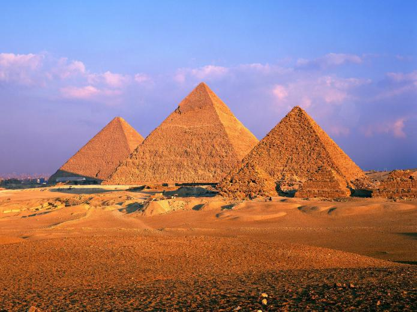
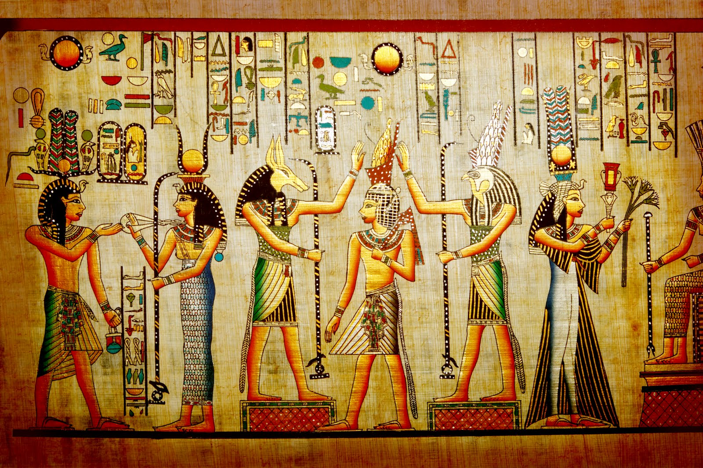
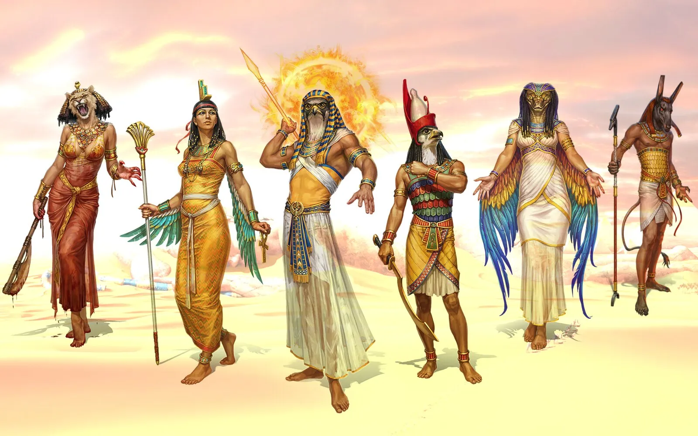

Antzinako Egipto bezala ezagutzen dena, K.a. 3200 urtearen inguruan finkatu zen erresuma bat izan zen. K. a. Behe eta Goi Egiptoren bateratzearekin. Zibilizazio honen amaiera K.a. 31. urtean ezarri zen historialarientzat. C, Erromatar Inperioak bere lurraldearen zati formala bihurtu zuenean.
Egiptoar mitologia, Antzinako Egiptoko erlijioan oinarritzen diren sinesmenen azterketa da, hau da, garai predinastikotik kristautasuna nagusitu zen arte, garai horretan, Justiniano I.aren agintaldian, 535. urtean, horrelako praktikak debekatu baitziren.
Egiptoar mitologiak herri honen bizitzaren alderdi guztiak hartzen ditu bere baitan, jainkoei eskainitako konplexu monumental handiak, betiereko bizitzaren bilaketa eta faraoiaren boterearen frogapena sortzera eramanez. Hiru milurte baino gehiagoan zehar, beren jainkoen mitoak eta kondairak elikatu, aldatu eta sakondu zituzten, konkistatutako herri bakoitzaren sinesmenak bereganatuz, norberarenak aberastuz.

Egiptoar mitologian, hasieran zegoen bakarra Nun zen, antzinako ozeanoa, non kosmoseko elementu guztiak sakabanatuta zeuden. Hori horrela izan zen, harik eta Ra bere buruaz jabetu eta izena eman eta zerua lurretik banandu zuen arte. Bere arnasarekin Shu sortu zuen, haizeak eta bere listuarekin Tefnut hezetasuna sortu zuen. Nundik bi muturretara joateko agindu zien, eta, erdian, ur artetik irten zen leku lehor bat sortu zuen, Egipto izango zena.
Rak landareak eta animaliak sortzen jarraitu zuen. Bitartean, Shuk eta Tefnutek Nut eta Keb sortu zituzten, zerua eta lurra, eta hauek ere ezkondu egin ziren eta beren alabei izarrak sortu zizkieten, zeruko ganga sortuz.
Nut eta Kebekin zer gertatu zen jakin gabe, Rak bere begietako bat bidali zuen Shu eta Tefnuten bila, gertatutakoa kontatzeko. Hala ere, erantzunik aurkitu ez zuenez, Rarengana itzuli zen. Baina beste begi batek bere lekua hartu zuela ikusita, negarrez hasi zen, eta malkoetatik lehen gizon-emakumeak jaio zitzaizkion. Rak bere begi zaharra hartu eta bekokian jarri zuen, horrela Eguzkia sortuz.
Goizero, Amon-Ra zeruan zehar ibiltzen da Nut gainean flotatzen duen txalupa batean. Gauean, Nut eguzkia irensten ari da, hurrengo goizean berriz jaiotzeko. Eguzkia bizirik dagoen 12 orduen ondoren, Amon-Rak Duat zeharkatu behar du eta iluntasunaren indarrei aurre egin behar die, Apepek (edo Apofisek bere bertsio grekoan irudikatuak), eguzkia irentsiz ordena kosmikoarekin amaitzeko helburua zuen suge handiak. Goizero Rak Apep garaitzen du eta eguzkia garaile ateratzen da.

Aipatu dugun bezala, egiptoar mitologiak hain garai luzea hartzen du, non ezinezkoa den artikulu bakar batean biltzea, eta oso konplikatua da, ez bakarrik sinesmen-sistema ikaragarriagatik eta denboran izan duen luzapenagatik, baizik eta K.a. XVIII. mendetik aurrera iristen hasi ziren kanpoko eragin guztiengatik. K. a. Kanaango lurreko jendearen migrazioarekin (hebrearrak euren artean) eta, azkenik, hiksoen edo heqa khaseshet autoreen inbasioarekin herrialde menditsuetan.
Beraz, egiptoar mitologian funtsezko ezaugarri batzuk ezarriko ditugu.
Gaua Egiptora erortzen denean, Eguzkiak, Nut zeruko jainkosak irentsita, bidaia luze eta gau bat egiten du. Sugez gordetako lehen elizpea igaro eta zerumugaren azpitik sartzen da.
Ate bakoitzean, jainkotiar haloak ordubetez bizia esnatzen dien hildakoek hartzen dute eguzkia. Hildakoek, eguzki-txalupan (Mandyet edo Mesektet izenekoa) leku bat lortzeko esperantzan, ontzi jainkotiarra ate batetik bestera aurkitzen dute.
Eguzkia azken kobazulora iristen denean, lau babuino arduratzen dira azken arkupea irekitzeaz, Lurreko munduari jainkozko astroa berriro distiratzeko zorian dagoela iragarri aurretik.
Bada haraindiko beste eskualde bat, sakonagoa, non eguzki-izpiak ez diren iristen: hetemit (suntsipen-lekua). Hemen suntsitzen dituzte potentzia suntsitzaileek jainkoen etsaiak.
Zigorra Osiriseko auzitegiak kondenatu dituen hildakoak zigor izugarri baten arriskupean daude. Zigorren lekuetan konfinaturik, burua mozten diete, erre egiten dituzte, eta labanaz armaturiko izaki beldurgarrien letania batek erauzten die bihotza: horrela, beren ba desagertu egiten da, eta hildakoak "ez izateko" egoeran geratzen dira, heriotzaren ondoren bizitza bat betiko kentzen diena.
Zazpi Izaki Jakintsuak Batzuetan Ptah aurkitzen da Mehet-Uret jainkosaren Zazpi Izaki Jakintsuak izeneko izaki batzuekin, bere ama zena. Raren begiko begi-niniaren uretatik irteten ziren, eta zazpi belatzaren itxura hartu zuten, hegan irten zirenak, eta Thot eta guzti irakaskuntzaren eta letren buru izan ziren. Ptahk, arkitekto gisa, Thot eta bere laguntzaileen diseinuak eginez, Sejmet jainkosak bezala, bere atributu batzuk zituen.
Ilargiaren begia Horusen ezkerreko begiak, Ilargia irudikatzen zuenak, Seth eta Horus borrokatu ziren begi honengatik, azkenean Set gaiztoak lapurtu eta irenstea lortu zuen (ilbehera), baina Horusek berak kendu zion begia etsaiari beste jainko batzuen laguntzarekin, bere osaba bekaiztiaren sabeletik erauzi zuelarik. Horusek bere aita Osirisi aurkeztu zion, bizitza berri bat lortzen lagunduz.

Rak eguzki-argia eta bizitzaren sorrera irudikatzen ditu, bere gurtza nagusia Heliopolisen zegoen.
Hildakoen jainko egiptoarra. Berak gidatzen zuen hildakoen izpiritua "beste mundura"
Tebasko tribuen tokiko jainkoa da. Jainko unibertsala da eta jainkoen aitatzat hartzen da.